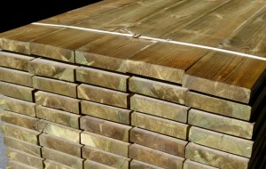

Welcome to mediena
Impregnuota mediena | Vilniaus Medienos Centras
2020.10.29 07:56+370 640 62626 | +370 656 41331 | +370 687 33909 | +370 640 74026 | Visos prekės Akcijos Apie mus Kontaktai MENIU 0 Pradžia Produktai Impregnuota mediena
Impregnuota mediena
Visos prekės Akcijos Dvigubo pjovimo mediena Obliuota mediena C24 stipruminio gradavimo kalibruota mediena Impregnuota mediena Impregnuota dvigubo pjovimo mediena Impregnuota kalibruota mediena Stogo pakalimo lentos ir tvoros lentos Lauko dailylentės Vidaus dailylentės Grindų lentos Terasinė mediena Pirties mediena Gultai Dailylentės Tašeliai Kiti pirties gaminiai Kuolai Termo mediena Deginta, alyvuota, dažyta mediena Obliuotos medienos gaminiai Durys, apvadai, staktos Skydai, palangės, stalviršiai, pakopos, lentynos Apdailos juostelės ir kampai Laiptų mediena Kotai ir vėliavų stiebai Dekoratyviniai ir kiti medienos gaminiai Grindjuostės Durelės baldams žaliuzinės Džiovinta mediena Klijuota mediena Dvitėjinės sijos FSC sertifikuota mediena OSB plokštės OSB plokštės be išdrožos OSB plokštės su išdroža Kietas kuras Medžio pjuvenų granulės Medžio pjuvenų briketai Anglis Durpių briketai Malkos Medienos apsaugos priemonės Visos prekės Dvigubo pjovimo mediena Obliuota mediena C24 stipruminio gradavimo kalibruota mediena Impregnuota mediena Impregnuota dvigubo pjovimo mediena Impregnuota kalibruota mediena Stogo pakalimo lentos ir tvoros lentos Lauko dailylentės Vidaus dailylentės Grindų lentos Terasinė mediena Pirties mediena Gultai Dailylentės Tašeliai Kiti pirties gaminiai Kuolai Termo mediena Deginta, alyvuota, dažyta mediena Džiovinta mediena Obliuotos medienos gaminiai Durys, apvadai, staktos Skydai, palangės, stalviršiai, pakopos, lentynos Apdailos juostelės ir kampai Laiptų mediena Kotai ir vėliavų stiebai Dekoratyviniai ir kiti medienos gaminiai Grindjuostės Durelės baldams žaliuzinės Klijuota mediena Dvitėjinės sijos FSC sertifikuota mediena OSB plokštės OSB plokštės be išdrožos OSB plokštės su išdroža Kietas kuras Medžio pjuvenų granulės Medžio pjuvenų briketai Anglis Durpių briketai Malkos Medienos apsaugos priemonės Akcijos storis (mm) plotis (mm) ilgis (mm) Filtruoti Išvalyti filtrąPagal Jūsų užklausą neradome produktų. Pabandykite kitų matmenų variantus arba susisiekite su mūsų vadybininku .
Norėdami filtruoti prekes įveskite bent vieną matmenį!
C24 graduota kalibruota impregnuota mediena 45 x 170 x 6000 Kodas: 106157 27,54 €/vnt. - + Į krepšelį Impregnuota dvigubo pjovimo mediena 50 x 50 x 3000 Kodas: 103203 Urminė kaina: 2,94 €/vnt.perkant nuo 267 vnt.
Mažmeninė kaina: 3,26 €/vnt.perkant iki 267 vnt.
- + Į krepšelį -30% Impregnuota dvigubo pjovimo mediena 25 x 100 x 4800 Kodas: 103400 3,64 €/vnt. 5,20 €/vnt. - + Į krepšelį -30% Impregnuota dvigubo pjovimo mediena 25 x 100 x 4200 Kodas: 103713 3,20 €/vnt. 4,57 €/vnt. - + Į krepšelį -50% Impregnuota dvigubo pjovimo mediena 25 x 100 x 3000 Kodas: 107001 1,65 €/vnt. 3,29 €/vnt. - + Į krepšelį Impregnuota dvigubo pjovimo mediena 25 x 50 x 3000 Kodas: 103220 Urminė kaina: 1,47 €/vnt.perkant nuo 533 vnt.
Mažmeninė kaina: 1,64 €/vnt.perkant iki 533 vnt.
- + Į krepšelį Impregnuota dvigubo pjovimo mediena 150 x 150 x 6000 Kodas: 104782 Urminė kaina: 52,73 €/vnt.perkant nuo 15 vnt.
Mažmeninė kaina: 58,73 €/vnt.perkant iki 15 vnt.
- + Į krepšelįIšparduota
Impregnuota dvigubo pjovimo mediena 120 x 120 x 6000 Kodas: 103088 Urminė kaina: 33,83 €/vnt.perkant nuo 23 vnt.
Mažmeninė kaina: 37,59 €/vnt.perkant iki 23 vnt.
- + Į krepšelį Impregnuota dvigubo pjovimo mediena 100 x 150 x 6000 Kodas: 104616 Urminė kaina: 35,24 €/vnt.perkant nuo 22 vnt.
Mažmeninė kaina: 39,15 €/vnt.perkant iki 22 vnt.
- + Į krepšelį Impregnuota dvigubo pjovimo mediena 100 x 100 x 6000 Kodas: 104615 Urminė kaina: 23,49 €/vnt.perkant nuo 33 vnt.
Mažmeninė kaina: 26,10 €/vnt.perkant iki 33 vnt.
- + Į krepšelį Impregnuota dvigubo pjovimo mediena 100 x 100 x 3000 Kodas: 107011 Urminė kaina: 11,75 €/vnt.perkant nuo 67 vnt.
Mažmeninė kaina: 13,05 €/vnt.perkant iki 67 vnt.
- + Į krepšelį Impregnuota dvigubo pjovimo mediena 75 x 250 x 6000 Kodas: 103542 Urminė kaina: 44,04 €/vnt.perkant nuo 18 vnt.
Mažmeninė kaina: 48,99 €/vnt.perkant iki 18 vnt.
- + Į krepšelį 1 2 3 >SPEC. PASIŪLYMAI
AkcijaImpregnuota mediena 25x100x4200; 25x100x4800
-30 %
Žiūrėti prekę AkcijaIMPREGNUOTA MEDIENA 25x100x3000
-50 %
Žiūrėti prekę AkcijaPakalimo lentutės 18x70x3000
eglė
-15 %
Žiūrėti prekę AkcijaObliuotas tašas 28x45x6000
B rūšis
-50 %
Žiūrėti prekę AkcijaLauko dailylentė/ Pakalimo lenta 21x121x3000
rombas, eglė
-30 %
Žiūrėti prekę AkcijaObliuoti tašai, maumedis 45x45x3000; 45x70x3000; 45x145x3000
-15 %
Žiūrėti prekę AkcijaDvigubo pjovimo mediena stambių matmenų 75x150x6000; 250x250x6000; 150x150x6000; 120x120x6000; 100x100x6000
-30 %
Žiūrėti prekę AkcijaC24 stipruminio gradavimo kalibruota mediena 45x170x6000; 145x145x600; 95x95x6000
-30 %
Žiūrėti prekę AkcijaDvigubo pjovimo mediena už pusę kainos įvairių matmenų
-50 %
ribotas išpardavimo kiekis
Žiūrėti prekę AkcijaObliuoti tašai įvairių matmenų
B rūšis
-15 %
Žiūrėti prekę AkcijaKuolai
visų turimų matmenų
-15 %
Žiūrėti prekę AkcijaObliuoti tašai 25x25x3000; 40x60x6000
-30 %
Žiūrėti prekę AkcijaLauko dailylentėms nuolaidos iki -29% įvairių matmenų ir profilių UYSk, UYV, UYVk
eglė
-29 %
Žiūrėti prekę AkcijaSIBIRO MAUMEDŽIO TERASA 1 rūšis
Ilgis 3 m
18.99 €/m 2
perkant virš 20 m²
Žiūrėti prekę AkcijaTERASOS LENTOS, PUŠIS Impregnuotos rudos
B rūšis
8.35 €/m 2
Perkant min. 20 m2
Žiūrėti prekę AkcijaTERASOS LENTOS PUŠIS 28x120x3000 ir 28x120x2400
impregnuotos ruda spalva
12.25 €/m 2
Perkant virš 20 m²
Žiūrėti prekę AkcijaTerasos lentos, pušis
neimpregnuotos
B rūšis
7.55 €/m 2
perkant min. 20m2
Žiūrėti prekę Akcija2-os KLASĖS MEDIENA 25x100x6000
129 €/m 3
Kaina nurodyta be PVM
Žiūrėti prekęAkcija medienai su FSC sertifikatu
PJAUTINĖ, GRADUOTA, KONSTRUKCINĖ, IMPREGNUOTA MEDIENA
Žiūrėti prekę AkcijaAKMENS ANGLIS
159 €/tona
Perkant min. 2 tonas
Žiūrėti prekę AkcijaKIETMEDŽIO ANGLIS
-30 %
Žiūrėti prekę AkcijaDVITĖJINĖS SIJOS
5.85 €/vnt.
Nemokamas pristatymas
Žiūrėti prekę Žiūrėti visus pasiūlymusSTRAIPSNIS
Impregnuota mediena
Kiek kainuoja impregnuota mediena?
Impregnuota mediena kainuoja labai įvairiai. Tai priklauso nuo gamintojo, dydžio, kokybės. Labiausiai priklauso nuo dydžio. Medieną galima įsigyti įvairių išmatavimų. Mažiausias gali kainuoti nuo kelių eurų, tuo tarpu už didžiausią gali tekti mokėti keliasdešimt eurų ar net šimtą ir daugiau. Kainų skirtumas yra visiškai natūralus, kuo mažesnius pirksite, tuo daugiau reikės ir atvirkščiai. Jeigu pirksite didesnį medienos gabalą, jų reikės mažiau. Kartais perkant brangesnį galima ir sutaupyti. Labai svarbu, jog prieš perkant labai atidžiai apskaičiuotumėte kiek konkrečiai Jums reikėtų imant įvairius dydžius ir tuomet skaičiuoti kokio dydžio Jums reikia, jog sutaupytumėte. Žinoma, atsižvelkite ir į tai, kuriuos imant būtų lengviau ir greičiau dirbti. Taip pat ir tai kaip tai atrodys estetiškai. Jeigu pagal Jūsų viziją gražiau atrodys mažesni, tuomet imkite juos, jeigu norisi didesnių, pirkite didesnius. Svarbu, jog atsižvelgtumėte ne tik į išvaizdą, bet ir į tai, ko patys norite. Norint sutaupyti visada galima pirkti didesnį kiekį iš karto. Žinoma, tai yra gana rizikinga, nes gali būti, jog tokio kiekio Jums neprireiks ir tokiu atveju būsite išleidę tik daugiau. Daugelis pardavėjų siūlo mažesnes kainas arba papildomas nuolaidas, jeigu pirksite daugiau. Tokiu atveju yra išleidžiama mažiau. Yra labai svarbu, jog žinotumėte tikslų skaičių, kurio prireiks, jeigu planuojate taupyti tokiu būdu. Taip pat, svarbu ir tai, jog iš karto žinotumėte kur saugiai palikti visą turimą medieną.
Pagal ką pasirinkti pardavėją?
Dažnai perkant brangesnę prekę yra itin sunku pasirinkti pardavėją. Neretai pasitaiko, jog perkant medieną pardavėjas ir yra gamintojas, toks atvejis nėra retas ir jis yra itin palankus. Perkant medieną iš gamintojo galite būti tikri, jog gausite geriausią kainą, taip pat Jums nereikės papildomai domėtis apie gamintoją bei pardavėją, užteks vienos paieškos. Visgi, jeigu tokios galimybės nėra, tuomet pardavėją reikia rinktis itin atidžiai. Svarbu, jog renkantis būtų ne tik mažiausia kaina ar akcijos, bet ir papildomos paslaugos. Svarbu yra, jog būtų itin sklandus aptarnavimas. Suteikta pakankamai informacija. Labai svarbu, jog aptarnavimas būtų kokybiškas, paslaugus darbuotojų bendravimas nenusako medienos kokybės, tačiau tai gali lemti kainą. Jeigu pardavėjai bus itin paslaugūs, galbūt jie taip pat bus linkę derėtis ir Jūs mokėsite mažesnę sumą. Renkantis pardavėją labai svarbu ir tai ar jis dirba tiesiogiai su tiekėju. Tai gali reikšti, jog kaina bus kiek mažesnė. Labai svarbu ir tai, jog būtų pateikta itin išsami informacija apie prekes.
Kiek laiko užtrunka pristatymas?
Patiems pargabenti medieną gali kilti sunkumų, todėl didžioji dalis parduotuvių siūlo pristatymo paslaugas. Dažnai pasitaiko, jog tai įeina į mokamą kainą, kartais reikia mokėti papildomai. Yra labai svarbu, jog tai išsiaiškintumėte prieš perkant, jog netektų nusivilti didesne kaina. Pristatymas užtrunka labai įvairiai. Tai priklauso nuo daugelio dalykų. Visų pirma, kada Jūs užsisakėte prekes. Jeigu prekės buvo užsakytos penktadienio vakarą, reikėtų nusiteikti, jog teks palaukti ilgiau. Tokiais atvejais Jūsų užsakymas bus išsiųstas kartu su tais, kurie buvo pateikti pirmadienio rytą. Tai yra todėl, jog dažnai kurjeriai nedirba savaitgaliais, kaip ir sandėliai. Taip nutikus nereikėtų nusivilti. Laukti reikės tik kelias papildomas dienas. Dažniausiai užsakymų reikia laukti vos kelias dienas. Žinoma, jeigu užsakysite itin didelį kiekį ir tuo metu sandėlyje nebus tokio kiekio, gali tekti laukti kiek ilgiau. Žinoma, galite susitarti, jog atvežta būtų ne visos prekės iš karto. Tik tokiu atveju gali tekti mokėti papildomai.
Ar galima grąžinti medieną?
Užsisakant internetu gali būti, jog teks ją grąžinti, nes realybėje atrodys kiek kitaip nei ją įsivaizdavote. Tai gali būti ir dėl netinkamų išmatavimų ir panašiai. Labai svarbu, jog pasidomėtumėte iš anksto apie grąžinimą. Yra parduotuvių, kurios suteikia šią galimybę, tačiau perkant medieną gali pasitaikyti, jog tokios galimybės nebus. Tai yra dėl to, nes itin ilgai užtrunka ją sukrauti, paskui iškrauti, todėl parduotuvei būtų nemaži nuotoliai, jeigu būtų suteikta ši galimybė. Jog nenutiktų taip, kad reikėtų grąžinti, yra labai svarbu, jog prieš perkant puikiai žinotumėte, ko ieškote. Jeigu reikia, tuomet bandykite ieškoti ir fizinėje parduotuvėje, tuomet būsite tikri, jog perkate būtent tai, ko Jums reikia.
Skaityti daugiauPlačiausias pasirinkimas
Didžiausias sandeliuojamos medienos kiekis Lietuvoje!
SusisiekiteLanksti kainodara
Atsižvelgsime į užsakomą kiekį ir specifikaciją.
SusisiekiteParduotuvė Vilniuje
Tai ne tik elektronė prekyba, o kartu ir fizinė parduotuvė.
SusisiekiteGaukite geriausius pasiūlymus užsisakę mūsų naujienlaiškį!
Meniu:
Visos prekės Akcijos Apie mus Straipsniai KontaktaiPirkimo informacija:
Atsiskaitymas Pristatymas Prekių grąžinimas ir keitimas Privatumo politikaĮmonės rekvizitai:
UAB Vedrana
Liepkalnio g. 35A, LT-02105 Vilnius
įm.kodas 121929571
PVM mok.kodas LT219295716
AB SEB bankas
SWIFT kodas CBVILT2X a/S:
LT387044060001096096
Bendraukime:
Parašykite žinutę:
Autorinės teisės © 2020 Vedrana
Prekė buvo įdėta į krepšelį
Tęsti PirktiTokio kiekio prekės " " šiuo metu neturime.
Maksimalus kiekis vnt.
Tęsti pirkimą Mūsų interneto tinklapis patalpina slapukus jūsų naršyklėje ar įrenginyje tada, jei tokia funkcija yra aktyvuota jūsų naršyklės nustatymuose. Mes naudojame šiuos slapukus siekdami pagerinti šios svetainės funkcionalumą, analizės ir interesais paremtos reklamos tikslais Sutinku Skaityti daugiau